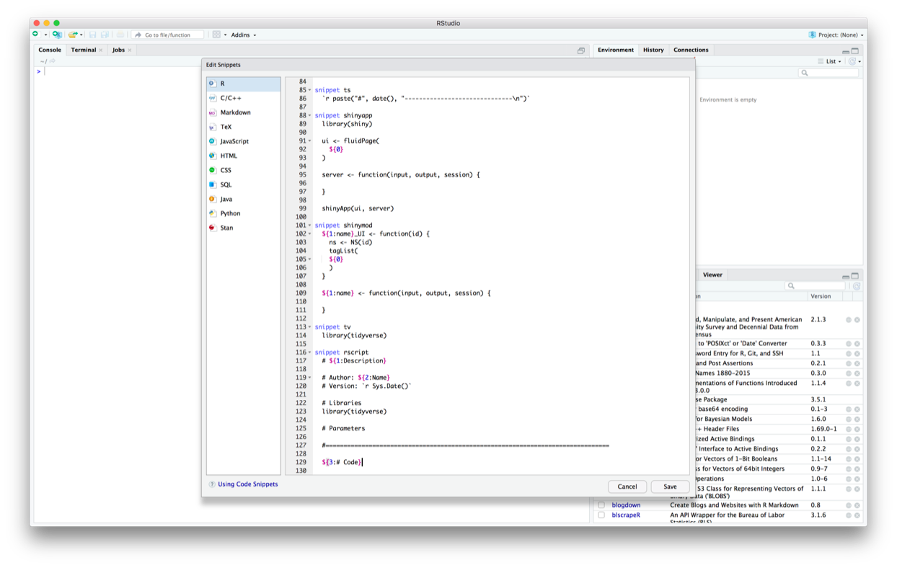

4 RStudio code snippets
In RStudio, code snippets are text macros that you can use to insert bits of commonly used code. Here, we’ll walk you through the creation of two snippets:
- A snippet to add in
library(tidyverse) - A snippet to start an R script
You can use the same process to create any snippet you want.
4.1 tv snippet
- Go to Tools > Global Options… > Code, and find the Snippets section.
- Make sure Enable code snippets is checked.
- Click on Edit Snippets….

- Scroll down to the bottom of the snippet editor to add your snippet.
- Paste in the following code to create a
library(tidyverse)snippet namedtv:
snippet tv
library(tidyverse)Note that every line after snippet [snippet name] must start with a single tab.

- Click Save and exit the Preferences window.
Now, you can use your snippet. In the console, an RMarkdown document, or an R script, type tv then hit tab. library(tidyverse) should appear.
4.2 rscript snippet
We used a script template to create the scripts in our example project. Each script has a section for parameters and a section for code, separated by a line. There are spots for the description, author, and version.
Here’s what the script template looks like:
# Description
# Author: Name
# Version: 2021-09-08
# Packages
library(tidyverse)
# Parameters
#===============================================================================
# CodeBecause the script template has elements for the user to fill in, the rscript snippet is going to be more complicated than the tv snippet.
- Follow the steps from the previous section to open the snippet editor.
- Paste in the following code to create a snippet named
rscript:
snippet rscript
# ${1:Description}
# Author: ${2:Name}
# Version: `r Sys.Date()`
# Packages
library(tidyverse)
# Parameters
# ============================================================================
${3:# Code}
The ${} components create variables. As you’ll see later, when you use the snippet, you can tab through these variables to fill them in. The numbers inside the {}s define the order in which you can tab through them.
- Click Save and exit the Preferences window.
Now, you can use your snippet.
- Type
rscriptand then hit tab. The script template should appear. - Fill in your variables (if the snippet has any). You can tab to automatically move the cursor to the next variable.

You shouldn’t have to type out rscript everytime you want to use the snippet. If you type out a portion of rscript, the name of the snippet should appear and you can hit tab to select the snippet.